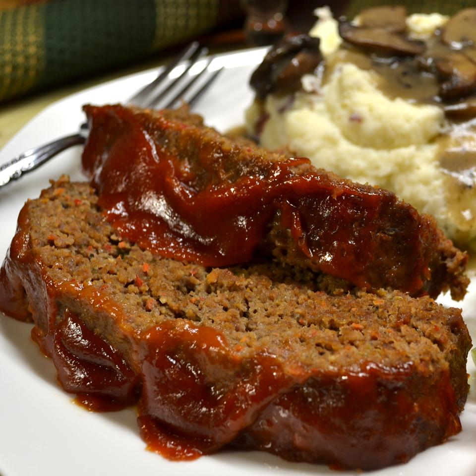

Meatloaf

Original Link
Meatloaf Ingredients
- 1 carrot, coarsely chopped
- 1 rib celery, coarsely chopped
- 1/2 onion, coarsely chopped
- 1/2 red bell pepper, coarsely chopped
- 4 white mushrooms, coarsely chopped
- 3 cloves garlic, coarsely chopped
- 2 1/2 pounds ground chuck
- 1 tablespoon Worcestershire sauce
- 1 egg, beaten
- 1 teaspoon dried Italian herbs
- 2 teaspoons salt
- 1 teaspoon ground black pepper
- 1/2 teaspoon caayenne pepper
- 1 cup plain bread crumbs
- 1 teaspoon olive oil
Glaze Ingredients
- 2 tablespoons brown sugar
- 2 tablespoons ketchup
- 2 tablespoons Dijon mustard
- hot pepper sauce to taste
Directions
- Preheat the oven to 325 degrees F
- Place the carrot, celery, onion, red bell pepper, mushrooms, and garlic in a food processor, and pulse until very finely chopped, almost to a puree. Place the minced vegetables into a large mixing bowl, and mix in ground chuck, Worcestershire sauce, and egg. Add Italian herbs, salt, black pepper, and cayenne pepper. Mix gently with a wooden spoon to incorporate vegetables and egg into the meat. Pour in bread crumbs. With your hand, gently mix in the crumbs with your fingertips just until combined, about 1 minute.
- Form the meatloaf into a ball. Pour olive oil into a baking dish and place the ball of meat into the dish. Shape the ball into a loaf, about 4 inches high by six inches across.
- Bake in the preheated oven just until the meatloaf is hot, about 15 minutes.
- Remove the meatloaf from the oven. With the back of a spoon, smooth the glaze onto the top of the meatloaf, then pull a little bit of glaze down the sides of the meatloaf with the back of the spoon.
- Return meatloaf to oven, and bake until the loaf is no longer pink inside and the glaze has baked onto the loaf, 30 to 40 more minutes. An instant-read thermometer inserted into the thickest part of the loaf should read at least 160 degrees F (70 degrees C). Cooking time will depend on shape and thickness of the meatloaf.
Home Page